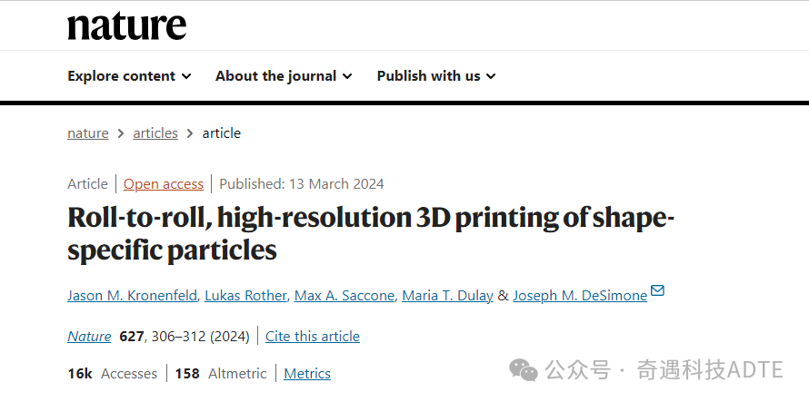
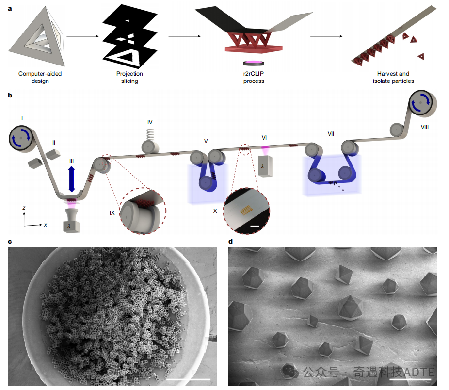
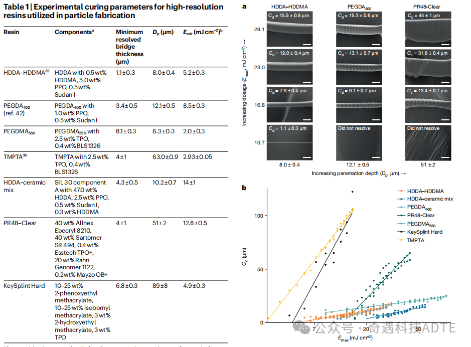
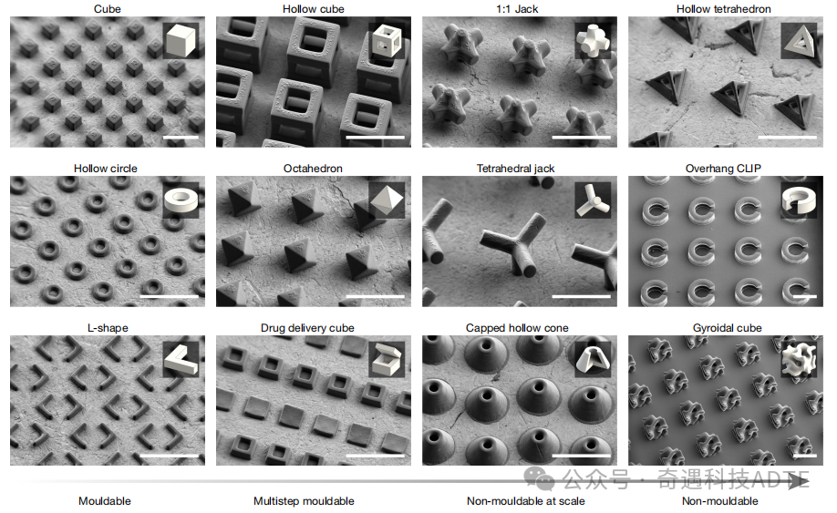
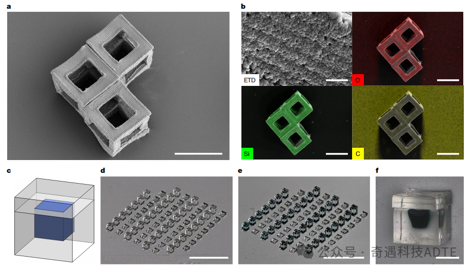
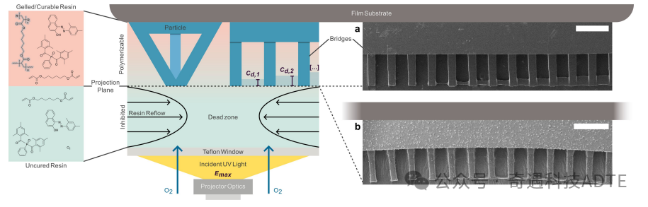
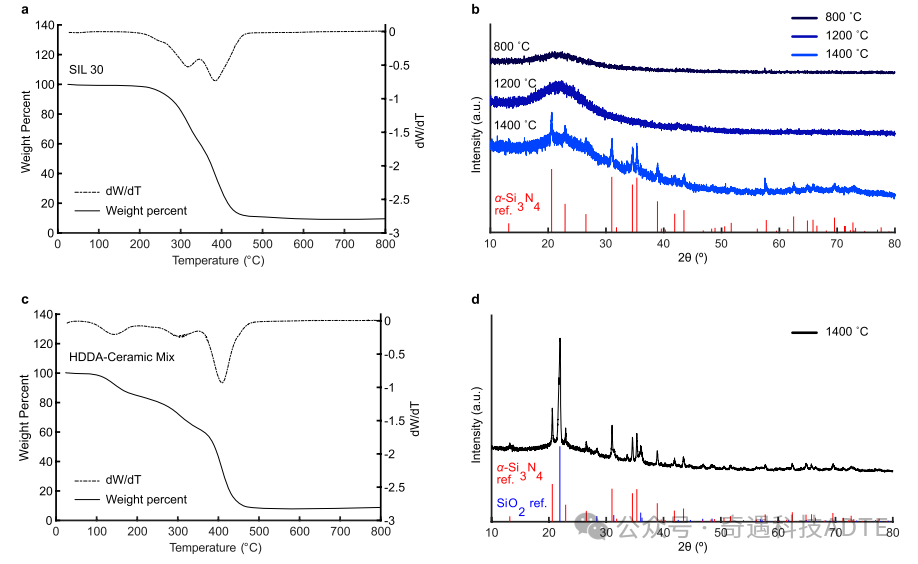

Recently, researchers led by Jason M. Kronenfeld at Stanford University published a study in Nature titled “Roll-to-roll, high-resolution 3D printing of shape-specific particles”. The study introduces a scalable, high-resolution 3D printing technique for the fabrication of shape-specific particles using roll-to-roll continuous liquid interface production (r2rCLIP).

Original Article: https://www.nature.com/articles/s41586-024-07061-4
Research Content
Particles ranging from several hundred micrometers down to the nanoscale are ubiquitous key components in many advanced applications, including biomedical devices, drug delivery systems, microelectronics, and energy storage systems. They also exhibit inherent material versatility in microfluidics, particulate systems, and abrasives.
Traditional particle fabrication techniques—ranging from grinding and emulsification to advanced molding and flow lithography—can generally be classified as bottom-up or top-down approaches. In this study, the authors employ top-down particle fabrication strategies such as direct lithography, single-step roll-to-roll soft lithography, and multi-step molding, as well as scalable methods like Particle Replication In Nonwetting Templates (PRINT) and Stamp Assembly of Polymer Layers (SEAL), which integrate photolithographic techniques to achieve two-dimensional (2D) geometric control.
This paper presents a particle fabrication technology that achieves simultaneous control of all microscale three-dimensional (3D) geometrical parameters while maintaining complexity, speed, material versatility, and scalability. The authors introduce a scalable, high-resolution 3D printing technique based on roll-to-roll continuous liquid interface production (r2rCLIP). As illustrated in Figure 1, r2rCLIP combines micron-level optical resolution with a continuously moving film substrate—replacing the static build platform—to rapidly fabricate and collect particles made from diverse materials and with complex 3D geometries.

Figure 1: r2rCLIP as a rapid manufacturing process for particles with complex geometries
(a) The r2rCLIP process is a quasi-continuous technique in which simple to complex 3D geometries are first digitally designed and then sliced into 2D image layers. These images are subsequently used to fabricate the 3D structures from photopolymer resins within a roll-to-roll printing process.
(b) Schematic of the experimental r2rCLIP setup. An aluminum-coated PET film is unwound from a feed roll (I) and mechanically braked (II) to maintain tension as it passes through a high-precision z-stage and CLIP module (III). This ensures accurate substrate positioning during platform movement (IV). The film then undergoes a cleaning step (V) and a secondary curing process (VI), followed by immersion in a heated ultrasonic bath containing a nonionic surfactant solution and a blade to induce delamination (VII). Finally, the film is collected onto another roll driven by a stepper motor, providing continuous translational motion throughout the process (VIII).
(c) A stitched set of scanning electron microscopy (SEM) images showing approximately 30,000 hollow cubic particles, demonstrating the scalability of this manufacturing approach.
(d) Examples of octahedral, icosahedral, and dodecahedral particles, each with unit sizes ranging from 200 to 400 µm, fabricated within a single print array. The samples in c and d were printed using an HDDA–HDDMA resin system and coated with Au/Pd (60:40) prior to SEM imaging. Scale bars: 3 mm (b, c), 500 µm (d).
The Digital Light Processing (DLP) technique projects a video composed of two-dimensional images representing a 3D model into a vat of photosensitive resin. This technology has improved its resolution from 50 µm to 4.5 µm and offers printing speeds of up to 3000 mm h⁻¹. Continuous Liquid Interface Production (CLIP) employs a 385 nm ultraviolet light-emitting diode (LED) and a digital micromirror device (DMD) to simultaneously project an array of photochemical photons. These photons activate the photoinitiators dissolved in the liquid resin, inducing free-radical polymerization within each printed voxel. As a result, the process effectively eliminates any layer-by-layer steps, as illustrated in Figure 2.

Figure 2: r2rCLIP enables high-precision optimization across a range of high-resolution internal and commercial materials
(a) The bridging method is used to determine the working curve of resin curing performance, as demonstrated by a series of bridges showing the increase in penetration depth and corresponding cured depth under constant exposure dosage. The ridge shadows are consistent with the pixel spacing. Prior to SEM imaging, the coating was sputtered with Au/Pd (60:40) for exposure measurement of the bridges.
(b) Determination of intrinsic penetration depth and critical cure dosage. At a given exposure (Emax), a lower slope corresponds to greater analytical control of the cured depth and reduced fluctuation tendency during exposure, resulting in significant variations in the cured depth (Cd). Scale bar: 15 µm.
To demonstrate the potential of r2rCLIP for fabricating dimensionally complex structures, we designed a series of geometrically intricate shapes using computer-aided design (CAD). These structures not only replicate designs previously achieved through 2D manufacturing and multi-step molding techniques but also include geometries that are otherwise un-moldable, as shown in Figure 3.
We classified geometric complexity along a spectrum ranging from shapes that are moldable at scale to those that are not. Moldable geometries are defined as those that can be produced through single-axis drawing, core, and cavity molding in one proportional step. If the theoretical molding process requires additional parting lines, ejector pins, draft angles, or extensive alignment, or contains un-moldable negative internal spaces, the geometric complexity increases accordingly—thus reducing moldability at scale.

Figure 3: SEM images of moldable-to-unmoldable geometries fabricated using r2rCLIP.
Particles were prepared using the HDDA–HDDMA system, with exposure intensities informed by the bridge-fitting data (Figure 2). Samples were washed as described and coated with a 60:40 Au/Pd layer prior to SEM imaging. Insets show the rendered models of each geometry for reference. The capped hollow cone is shown as a quarter-section in the inset for clarity. Scale bar: 250 µm.
We fabricated 200 µm particles from an HDDA–preceramic mixture and pyrolyzed them at 800 °C under nitrogen, yielding hollow ceramic particles with a feature size of 103 µm and wall thickness of approximately 25 µm (Figure 4a). Energy-dispersive X-ray spectroscopy (EDS) analysis of these particles revealed a uniform distribution of O, Si, and C elements (Figure 4b). Subsequent annealing under nitrogen at temperatures up to 1400 °C enabled the formation of phases such as silicon nitride and silica, depending on the precursor composition and processing conditions. In addition, we fabricated hydrogel cubes with a unit dimension of 400 µm and sealed them with hydrogel caps (Figure 4c).

Figure 4: Particles fabricated via r2rCLIP exhibit a wide range of potential applications, including ceramic microparticles and drug delivery systems
(a) Hollow ceramic cubes formed by pyrolysis of HDDA–ceramic composite resin.
(b) EDS analysis of the surface of a hollow ceramic cube (upper left) reveals a uniform distribution of silicon and oxygen, with normalized mass fractions of 30 ± 1% Si, 35 ± 1% O, and 35 ± 2% C. Elemental maps of O, Si, and C (upper right, lower left, and lower right, respectively) are overlaid on the secondary electron image of the hollow cube.
(c, d) Drug delivery cubes can be engineered to achieve specific targets such as payload volume, release profile, and material composition (c), and fabricated using r2rCLIP (d), for example with PEGDMA550 resin.
(e, f) The fabricated devices can subsequently be loaded with agents, as demonstrated by trypan blue dye filling (e), followed by sealing (f).
Scale bars: 100 µm (a); 5 µm (b, upper left); 100 µm (b, other three images); 3 mm (d, e); 200 µm (f).

Figure 5: CLIP introduces a reactive zone that suppresses polymerization at the PTFE–resin interface by controlling oxygen diffusion
Incident light passes through an optically transparent Teflon AF window, allowing simultaneous oxygen permeation.Oxygen dominates at this interface, creating a “dead zone” where free-radical polymerization kinetics are inhibited. Above this region, the resin can successfully cure, as demonstrated here with the HDDA–HDDMA resin system, hollow tetrahedral particles, and edge sections from the working curve bridging test.(a) TMPTA and (b) HDDA–HDDMA systems, showing an increase in bridge exposure dosage from left to right, ranging from 0.77 to 9.18 mJ/cm² for TMPTA and from 16.07 to 41.32 mJ/cm² across 12 bridge positions. Scale bar: 250 µm.

Figure 6:(a) Thermogravimetric analysis (TGA) shows that after heating the SIL30 resin to 800 °C under nitrogen, 9.5% of the initial mass remains.(b) X ray diffraction (XRD) patterns indicate that the pyrolyzed products of SIL30 resin cured at 800 °C and 1200 °C remain amorphous. After annealing at 1400 °C, the measured diffraction peaks correspond to reflections of α-Si₃N₄ (PDF-04-0070851) from the International Centre for Diffraction Data (ICDD). Following heating to 800 °C in nitrogen, 8.8% of the initial mass is retained.(d) XRD analysis of the HDDA ceramic composite after pyrolysis at 1400 °C for 8 h shows diffraction peaks matching the reflections of α-Si₃N₄ (PDF 04-0070851) and SiO₂ (PDF 04-0075018) from the ICDD database
Conclusions
In conclusion, we present a novel roll-to-roll, high-resolution, and continuous liquid interface production (r2rCLIP) technique capable of batch fabricating particles up to 200 µm with feature resolutions as fine as 2.0 µm. The optical design, optimized for both printer and resin, enables unsupported z-resolution on the order of single-digit micrometers. The approach demonstrates rapid interchangeability, complex 3D manufacturing capability, and inherent compatibility with a variety of resin chemistries across moldable, multi-step molded, and un-moldable particle geometries. Furthermore, for devices smaller than 200 µm, rapid particle fabrication allows potential gram-scale production within approximately 24 hours. This scalable particle manufacturing platform exhibits broad utility, spanning materials from ceramics to hydrogels, with promising applications in microtools, electronics, and drug delivery systems.